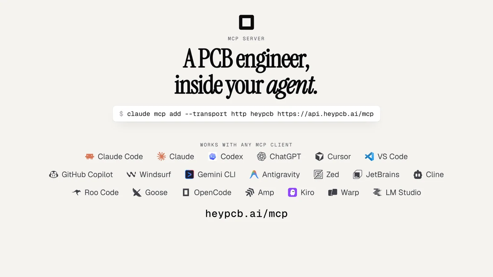
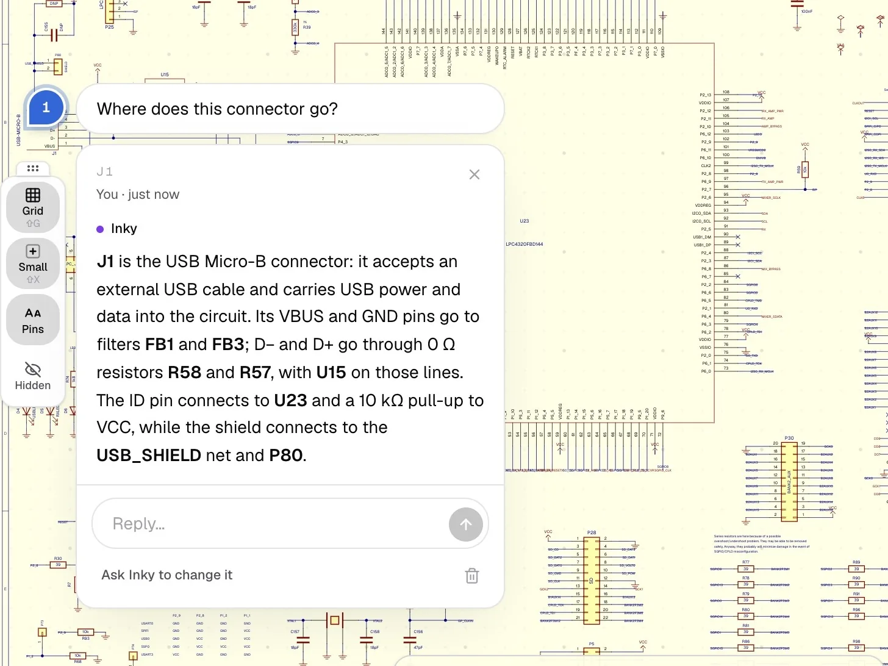
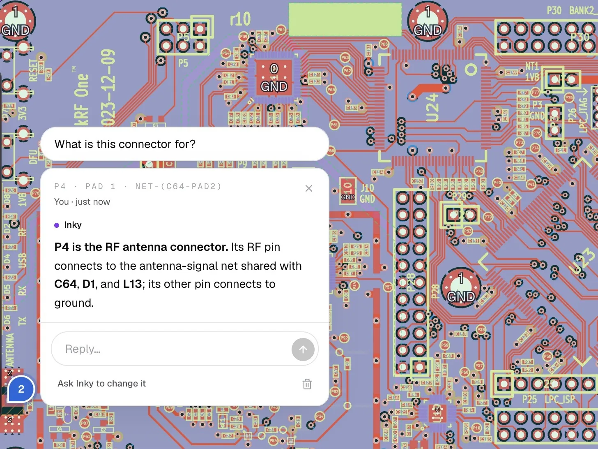
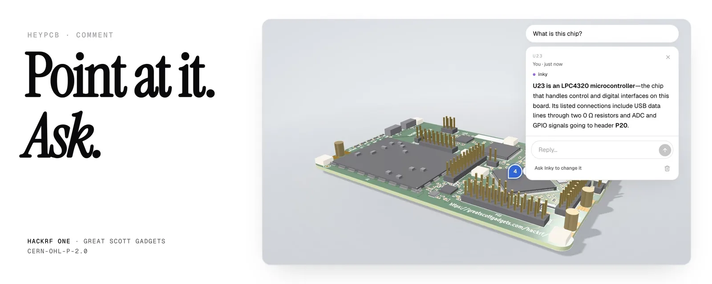
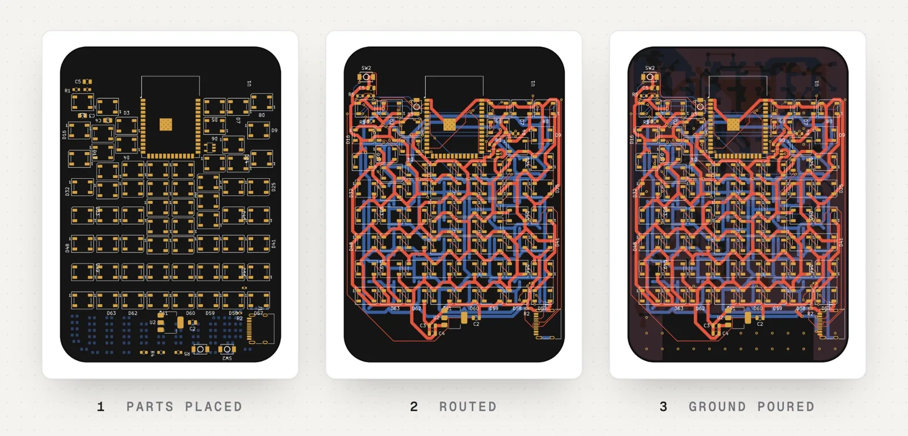
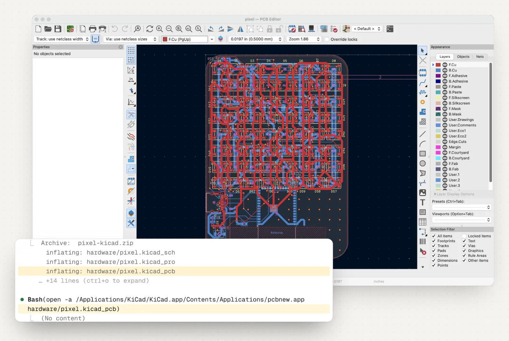
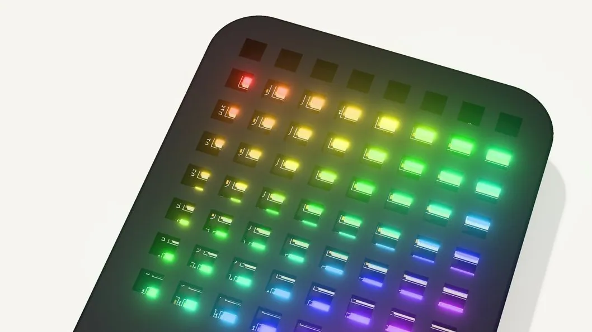
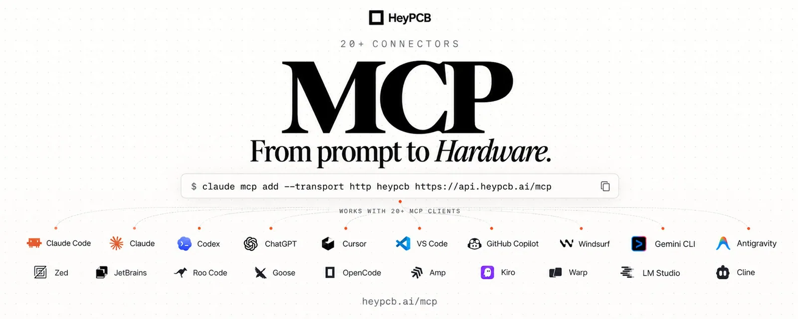
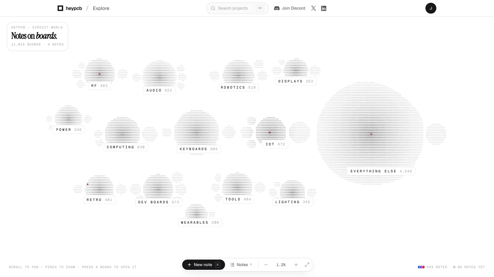
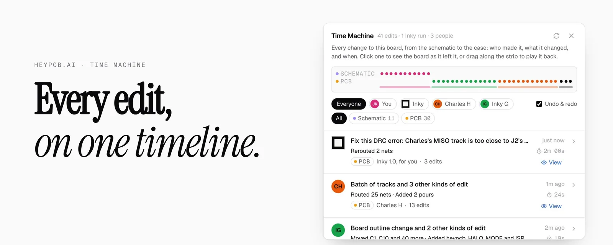

目录
00 一句话定位01 开源情况速答02 生成能力03 工程逻辑04 形式转换是怎么做的05 知识产权保护06 可迁移启示07 同类产品怎么做（开源路线）08 BMC 项目 I2C 图能否用 KiCad
00 一句话定位heypcb 卖的不是「一张漂亮的 PCB 渲染图」，而是一套真实、可制造、可编辑、归你所有的 KiCad 工程文件 。全站两条反复出现的主线：「Files you keep」（文件你保留） 与 「Build something real」（造点真东西） 。
过程 AI agent 自主完成原理图 → 布局 → 校验，可多人/AI 协作
输出 真实 .kicad_sch / .kicad_pcb + Gerber + STEP + BOM，任意 fab/工具可用
核心承诺 输出物可被第三方工具（KiCad 自身）独立验证、可整体带走，这本身就是最强有力的质量与信任证明。
01 开源情况速答结论：开源了「接入层」，核心工程内核仍是黑盒。
组件 是否开源 说明 MCP 客户端包 @heypcb/mcp / HeyPCB/heypcb-mcp 开源 · MIT TypeScript，30★。npm 包 + GitHub 仓库。 MCP 本地 server（npx -y @heypcb/mcp） 开源 README 原话：「has no design logic of its own」 ——只把工具透传 到远程服务器，另加本地文件工具。 Inky 设计 agent / 器件库 / 电路模块库 (add_block) 不开源 跑在 heypcb 私有服务器 api.heypcb.ai/mcp。 布局/布线/铺铜引擎、DRC/ERC、fab 检查 不开源 核心护城河，全部远程执行。

接入层开源 ——一条命令 claude mcp add --transport http heypcb https://api.heypcb.ai/mcp 即可让任意 MCP 客户端接入；但真正的工程能力在服务端。
开源壳 · MIT · HeyPCB/heypcb-mcp
接入层（渠道）——谁能拿到，就开源谁
MCP 客户端包
npx -y @heypcb/mcp · npm 分发
本地 MCP server（stdio）
README：has no design logic of its own
本地文件工具（唯一「真开源」的实质能力）
open/upload_kicad_project · save_export
check_local / export_local → 调 KiCad 的 kicad-cli
透传
(无设计逻辑)
闭源内核 · api.heypcb.ai/mcp
护城河（工程能力）——不开放
Inky 设计 agent（需求→设计）
per-effort 等级 · 逐轮自主决策
器件库 + 已验证电路块 add_block
real parts · pin maps · datasheet limits
布局 / 布线 / 铺铜引擎
placement · routing · pour / keepout
DRC / ERC / fab 检查
check_board · 每处 finding 带 fixWith
图解：开源边界 ——开放的只是「接入壳」（左），真正值钱的工程内核（右）是黑盒，跑在私有服务器上。「开源」被用作了分发策略，而非生态贡献。
策略解读 开放 MCP = 开放「分发渠道」（寄生在 Claude Code / Cursor / Codex 的 agent 生态里获客）；闭源工程内核 + 器件库 + 已验证电路块，才是它不愿意交出去的资产。
02 生成能力从「一句话需求」到「可制造文件」的端到端闭环，而非单点工具。
自然语言描述 prompt
→
原理图 schematic
→
布局布线 layout
→
3D / 外壳 3D / mech
→
制造文件 Gerber / STEP
→
真实 KiCad 工程 .kicad_sch / .kicad_pcb
Inky —— 会「动手」而不只是「聊天」的 agent
对话式设计 agent ：能直接对板子执行动作——放置器件、布线、铺铜、换层、旋转器件。努力程度分级 （计费核心杠杆）：Low / High → Starter，Max → Pro，Ultra → Max；本质是「一回合里 agent 自主干多少活」。Python 沙盒 （Pro+）：Inky 可写代码跑精确计算 （线宽/温升/阻抗/分压），用确定性计算兜住 LLM 的不确定输出。代码在隔离临时环境跑完即删。多模态 ：可依据图片/参考图做板形（后台 web 搜图）。Comment（指哪问哪 / 指哪改哪） ：把问题钉在任意器件/网络，Inky 从设计本身作答；每条评论可转成指令直接改板。
Low
High
Max
Ultra
Starter $20
基础一轮工作量
Starter $20
更高一回合工作量
Pro $60
+ Python 沙盒精确计算
Max $200
+ 最高 AI 用量
一回合内 agent 自主工作量递增 →
图解：努力等级（effort）作为计费核心杠杆 ——四档决定「一回合里 Inky 自主干多少活、多想几步」，并绑定解锁能力（沙盒 / 更高用量）。
四种视图：同一个设计的四个投影

Schematic（原理图） ——问 J1 去了哪里，Inky 顺连接解答。

PCB（布局） ——问 P4 是什么，答射频天线连接器并列出网络上的器件。

3D ——指着一颗芯片问 U23，答 LPC4320 微控制器及其角色。
生成质量的可信度
Real parts 真实器件 verified 库、pin maps、datasheet 极限值，而非占位 footprint。
A real pass 真实校验 电气/布局/制造检查作用于实际设计 ，给修复而非只报错。
Yours to keep 归你所有 Gerbers、STEP、可编辑 CAD，任意 fab、任意工具可用。

官方案例 ：Claude Code 通过 MCP 生成 8×8 RGB 显示板（ESP32-S3 + 64 颗 WS2812B，145 器件）——放置 → 布线 → 铺铜，最终 0 DRC / 0 ERC / 0 未连网络 ，且 KiCad 自身 DRC 也报零错误。

「真实文件」的证明 ——不是渲染图，而是解压后在 KiCad 里打开 pixel.kicad_pcb。

成品 RGB 板点亮。 
「你的 agent 现在能造硬件了」。 
Explore：11,000+ 开源硬件地图（生态入口）。
03 工程逻辑数据格式选型：押注 KiCad
所有设计存为 KiCad 原生工程 （S-expression 纯文本 .kicad_sch / .kicad_pcb），导出 Gerber（制造）与 STEP（结构）。
开源、无许可费，可自建渲染/解析/校验管线；
文件可携带 → 「files you keep」承诺成立，无 vendor lock-in；
可被官方 kicad-cli 独立验证 → 形成零误差质量背书；
生态里已有海量开源 KiCad 工程可导入，喂给 Circuit World。
AI 编排（Agent Loop）
工具执行架构 每回合决定调用哪些设计工具（放置/布线/DRC/导出），逐轮迭代直到满足；每步可撤销。
代码执行 跑在隔离、临时、用完即删的沙盒；结果留存到板子（像聊天记录）。
Web 检索 查器件（catalogue lookup 去标识化）、查参考图、查开源板。
模型路由 不同消息可路由到不同第三方模型供应商，不依赖单一模型。
需求 prompt
自然语言描述
「造一台…的机器」
LLM 决策
选哪些工具
模型可路由切换
调用工具改设计
放置 / 布线 / 铺铜
每步可撤销
校验
ERC / DRC / DFM
fixWith 即修复
未通过 → 回到决策
(迭代直到满足)
导出
Gerber / STEP / KiCad
通过
图解：Inky 的 agent 迭代闭环 ——「决策 → 改设计 → 校验 → 未通过再迭代」的循环，通过后才导出。沙盒代码执行在其中帮 LLM 做精确计算；模型可路由、每步可撤销。
校验闭环 + 协作版本
三层校验 ：电气（ERC）→ 布局（DRC）→ 制造（DFM / 真实 fab 规则），且「检查即修复」。Multiplayer ：多人实时协同（live 光标/选中/拖拽/布线/跟随），邀请制 + 编辑/只读 + 光标颜色。Time Machine ：硬件版版本控制——每次原理图/PCB/AI 编辑进同一时间线，可回放、定位引入问题的编辑、恢复任意版本；AI 的编辑连同触发它的 prompt 一起入库 （既是质量工具，也是审计/IP 追溯工具）。
ERC · 电气
短路 / 悬空引脚 / 电源冲突
DRC · 布局
间距 / 线宽 / 过孔 / 铺铜
DFM · 制造
真实 fab 规则
「检查即修复」check_board → fixWith
每一处 finding 都命名了对应的修复工具调用，
AI 不是「报一堆红叉」，而是给出下一步动作。
三层校验：从「电对不对」→「摆得对不对」→「厂里做不做得出来」逐层收窄
图解：三层校验漏斗 ——ERC（电气）→ DRC（布局）→ DFM（制造），逐层逼近可制造；右侧是「检查即修复」的工程化实现。

Time Machine ——38 次编辑、三人、一条时间线，拖回任意版本。
生态飞轮 & 计费
生态飞轮 ：Circuit World（11,000+ 开源板，可 fork）→ Explore（可缩放硬件地图）→ 挑战赛（$2,000 奖金驱动用户持续产出公开板）→ 代下单打样（工厂复审，闭环到制造）。内容是护城河，比赛是内容引擎。
档位 价格 关键差异 Starter $20/mo 10 项目 / 10 下载 / 5 协作者 / Low+High Pro $60/mo 无限项目与下载 / 10 协作者 / +Max / +Python 沙盒 Max $200/mo 20 协作者 / +Ultra Ultra $500/mo 最高 AI 用量
计费杠杆 = AI 工作量 × 努力等级 × 项目数 × 下载数 × 协作者数 × 沙盒；免费试用是「一块板子上的固定 Inky 用量」，用完引导付费，绝不自动转付费/扣款。
04 形式转换是怎么做的（技术原理）heypcb 的「转换」不是格式翻译，而是一个中心设计模型的不同视图/序列化 。它内部维护一份 KiCad 兼容设计模型，schematic / PCB / 3D / Gerber 都是同一模型的投影。
中心模型 设计模型 = 器件实例（symbol + footprint 映射） + 网表（连接关系） + 物理坐标 + 铜几何。Schematic 是它的「逻辑投影」，PCB 是「物理投影」，3D 是「渲染投影」，Gerber/STEP/BOM 是「制造序列化」，网表是「中间提取」。
KiCad 兼容设计模型
（唯一的「真身」，纯文本 S-expr）
器件实例 + 网表 + 坐标 + 铜几何
.kicad_sch / .kicad_pcb
Schematic 原理图
逻辑投影（谁连谁）
PCB 布局
物理投影（放哪、走线）
3D 视图
渲染投影（板体 + STEP）
Netlist 网表
中间提取（连接关系）
Gerber / STEP / BOM
制造序列化（kicad-cli 导出）
视图
视图
视图
提取
导出
「转换」不是格式翻译，而是同一份设计模型的不同投影与序列化——因此各视图天然同步、无转换误差
图解：中心模型 → 多投影（形式转换的本质） ——schematic / PCB / 3D 是「视图」，netlist 是「中间提取」，Gerber/STEP/BOM 是「制造序列化」。heypcb 内部只维护一份设计模型，所以四处永远一致。
转换流水线（对应 MCP 工具，README 原文）
转换 MCP 工具 背后机制 需求 → 网表 search_parts · get_part · add_parts · add_block · connect → get_netlist LLM 把需求拆成「真实器件 + 已验证电路模块 + 连接关系」，产出 netlist（谁连谁）。 网表 → 布局布线 set_board_outline · set_board_rules · move_part · lock_parts · set_placement_rules · add_ground_pour · rip_up_net · add_pour · stitch_vias 靠 symbol↔footprint 映射把逻辑符号变成物理封装坐标；布线按 DRC 规则画铜（拆线/铺铜/缝合过孔）。 设计 → 校验 check_board（每处 finding 带 fixWith） ERC（电气）+ DRC（布局）+ DFM（制造）三层；「检查即修复」= 给每个错误绑定一个修复工具调用。 设计 → 视图 preview_board · inspect_net · inspect_part · check_placement 选定层/高亮 net 与器件/未连接的可视化与测量。 设计 → 制造文件 export · export_local（调 kicad-cli） 复用 KiCad 官方 plot 引擎按层绘图（Gerber/钻孔）；BOM/贴片坐标从模型汇总。 设计 → 3D / STEP preview_board + STEP 模型 板轮廓拉伸成板体 + 每器件 3D 模型按位姿摆放渲染；导出合并成机械 CAD。 任意回溯 list_history · restore_board · redo Time Machine 时间线。
需求 prompt
→
器件+模块 search/add_parts
→
网表 connect / netlist
→
布局布线 move/route/pour
→
校验 ERC/DRC/DFM
→
导出 Gerber/STEP/BOM
原理图 Symbol（逻辑）
只描述「是什么、连到哪」
R1 / U2（位号）
PCB Footprint（物理）
只描述「焊盘几何、占多大」
0402 焊盘 + 丝印轮廓
库映射 symbol ↔ footprint
(.lib / .kicad_sym ↔ .kicad_mod)
网表（netlist）把「逻辑连接」落到「物理焊盘」——这是原理图变 PCB 的关键一跳
图解：symbol ↔ footprint 映射 ——原理图的逻辑符号靠库映射对应到 PCB 的物理封装；网表负责把这种对应关系与连接一起传递到布局。
为什么选 KiCad（技术底座）
文件开放且纯文本 ：.kicad_sch / .kicad_pcb 是可读 S-expression 文本 → agent 能直接读写/编辑真实设计，而非生成一张图。官方 kicad-cli 兜底 ：本地校验（check_local）与导出（export_local）直接调用 KiCad 8+ 的 CLI，权威、零误差、可离线。文件边界清晰 ：upload_kicad_project 上传的是 board、schematic 层级、.kicad_pro、.kicad_dru、库表与项目本地库（≤50MB，不含 3D 模型/备份）。
一句话 heypcb 没发明格式，而是寄生在 KiCad 生态上 ：用开源格式做设计资产，用官方 CLI 做零误差校验导出，把 AI 的「不确定生成」接上「确定性的工程验证」。
05 知识产权保护heypcb 成体系地同时保护三方 ：用户、开源作者、heypcb 自己。
① 用户（设计者）
所有权归用户 · heypcb 不主张
不训练公共模型 · 不 fine-tune
KiCad 原生 · 文件可携带
学习记录脱敏 · 命名即拒存
工程责任边界写清 (§7)
卖点：你的资产永远是你的
「不锁死你」= 最强信任
证明「你的就是你的」
② 开源作者 / 第三方
/licences 完整归属 + commit
「传染性」隔离 exception
导入即标注 imported + 作者
无许可证 → 不给 fork
claim 认领 / 无需账号下架
合规：可追溯、可退出
开源生态是原料
守法才能规模化借用
③ heypcb 自身
Service / 品牌 / UI 归自己
禁逆向工程 / 爬取 (§3)
商标「仅说明平台」非背书
IP 侵权可禁令救济 (§19)
DMCA + 重复侵权封号 (§11)
防线：内核闭源 + 仲裁
开源「壳」、闭源「核」
渠道换规模，内核守资产
图解：IP 三方保护结构 ——heypcb 同时保护好「用户、开源作者、自己」三方，各自手段不同，但都围绕「资产归属 + 可追溯 + 责任边界」展开。
① 保护「用户」的知识产权（核心信任卖点）
手段 条款/事实 所有权归用户 Terms §4：项目文件、prompt、设计、导出 Gerbers/KiCad 归档，用户保留完整所有权；heypcb 只拿「运营所需」的有限许可，明确不主张板子的所有权 。 不用你的数据训练模型 Privacy §3 原文：「We do not use your project files to train public foundation models, and we do not fine-tune any model on your data.」 这是 B 端用户最敏感的 IP 问题，直接写死。 文件可携带 KiCad 原生 + Gerber + STEP，随时整体导出、随时离开——用「不锁死你」证明「你的资产就是你的」。 学习记录脱敏与隔离 Privacy §3：跨账号只共享「通用工程指引」；任何命名了你项目/器件/网络名的指引在入库前被拒绝，设计细节不外泄。
② 保护「开源生态/第三方」的知识产权（合法合规）
开源库完整归属 （/licences 页）：列出库名、作者、许可证、源码 commit hash、改动说明，满足 CC-BY-SA「标明改动」义务。「传染性」隔离 （关键合规设计）：引用 KiCad library exception ——「把库里一个 footprint 放进你的设计，不会让你的板子被 share-alike 传染」，你的板子/原理图/制造文件仍归你（Terms §10）。导入开源板合规 （Terms §6）：标注 imported/作者/仓库/许可证；无许可证 → 标「All rights reserved」且不给 fork 按钮 ；无法分类 → 如实说明指向原文件；作者可 claim 认领并掌控 listing；任何人不需账号即可要求下架。发布授权模型 （Terms §5）：发布 = 公开快照 + 全球免版税许可（因「已下载的设计无法召回」），但可随时撤回快照停止展示。
③ 保护「heypcb 自身」 + 责任边界
对象 手段 自身 IP Service（软件/品牌/UI/文档/非用户内容）归 heypcb（§10）；禁反向工程/爬取（§3）；商标声明「仅说明器件平台、非背书」（规避商标侵权）。 争议解决 §19：仲裁 + 放弃集体诉讼/陪审团；IP 侵权可例外直接申请禁令救济。 侵权投诉 §11：标准 DMCA 六要素 + 反通知 + 重复侵权者封号。 责任边界 §7：AI 输出不保证可制造/安全，用户必须自审——既保护自己，也界定「AI 生成物」的法律性质。 代工版权校验 §21：第三方设计的板，只在不禁止商业用途的许可证下才允许下单制造；无许可证/禁商用/无法分类的拒绝制造。
IP 方法论一句话 把「你的资产永远是你的」做成产品卖点（而非只是法律条款），用「不训练模型 + 文件可携带 + 传染隔离」三个动作落地。
06 可迁移启示
1. 输出「真实格式」而非「渲染效果」 生成物能被第三方工具独立验证、能被用户带走，本身就是最强信任证明。
2. 确定性计算兜底 让 agent 用沙盒跑代码算精确值，是 AI 生成「从玩具到可用」的关键一跳。
3. 把「不训练模型」做成首屏承诺 专业用户付费的前提，值得单独写进隐私政策并反复强调。
4. 第三方内容合规要可追溯 来源 + 作者 + 许可证 + commit hash + 改动说明 + 认领/下架，缺一不可。
5. 主动隔离「传染性」风险 找到开源许可证里的 exception，明确「用 ≠ 被传染」，打消商用顾虑。
6. 让内容成为护城河 比赛、目录、地图、可 fork 生态持续制造公开内容，内容即获客。
7. 计费按「能力杠杆」分层 努力等级 / 沙盒 / 协作者数 / 下载数，让价值可感知、可升级。
8. 开源「接入层」、闭源「内核」 开放 MCP 拿渠道，守住工程内核与器件库这块真正的资产。
07 同类产品怎么做（基于开源信息的技术路线）heypcb 的开源暴露，等于给了我们一份免费的产品架构教科书：MCP 仓库 MIT 开源（工具 schema 完整暴露流程） ，而 KiCad 生态全开源 。做同类产品不用从零发明，而是「用开源拼装 + 在验证闭环与垂直场景上做深」。
核心判断 heypcb 真正的护城河不是 AI agent，而是三样闭源资产：真实器件库、已验证电路模块库、打板验证通过率 。这三样恰恰也是最难用开源直接替代的部分。
同类产品五层架构：每层标注「开源可复用」与「护城河」
产品与生态层
Web 编辑器 · 多人协作 · 版本时间线 · 内容生态（Circuit World 模式）
自研为主，借鉴 heypcb 产品机制
Agent 编排层
LLM 工具调用：search_parts · add_block · connect · set_board_outline · check_board · export
开源：参考 heypcb MCP 工具集（MIT）
Python 沙盒做确定性计算
布局布线引擎层
放置 / 布线 / 铺铜 / 过孔缝合（place · route · pour · stitch）
开源：KiCad router + Freerouting
器件与电路模块层 ★ 护城河
器件库（符号+封装+真实参数 pin maps/极限值）· 已验证电路模块（USB-C/LDO/I2C 总线…）
开源：KiCad 官方库 + 厂商库
但「真实参数 + 验证通过率」难开源
设计模型层
KiCad 工程（.kicad_sch / .kicad_pcb，S-expression 纯文本）作为单一设计模型
开源：KiCad 格式 + kicad-cli
护城河排序：器件/电路模块库 > 验证闭环（check_board 带 fixWith）> 打板验证数据 —— 前两者决定生成质量，第三者决定可信度
差异化入场：垂直场景（如 BMC 板卡）+ 本地优先/数据主权 + 开源内核（heypcb 是闭源黑盒）
图解：同类产品开源路线图 ——五层架构中，模型层 / 布线层 / Agent 工具集都可直接复用开源（KiCad、Freerouting、heypcb MCP 工具 schema）；真正要投入的是器件/电路模块库与验证闭环。
可直接复用的开源清单
组件 开源项目 许可证/注意 设计模型 + 校验 + 导出 KiCad / kicad-cli GPL 生态；check_local/export_local 的本地能力即来自它 符号 / 封装库 KiCad 官方库 + Espressif/Seeed/RPi 等厂商库 CC-BY-SA 4.0 with KiCad exception（用 ≠ 被传染 ） 自动布线 Freerouting 开源自动布线器，可接 KiCad 网表 Agent 工具集设计 HeyPCB/heypcb-mcp MIT —— 完整工具 schema 即「产品需求文档」 MCP 运行时 FastMCP / MCP SDK MIT / 官方
风险与建议 ① 最难的是「器件库积累 + 打板验证通过率」，不是 UI/agent——建议先聚焦一个垂直领域（如 BMC/服务器板卡）把器件和模块做深；② 复刻 heypcb 的「验证闭环」（每个 DRC/ERC finding 绑定一个修复工具调用 fixWith）是性价比最高的产品机制；③ 差异化打「本地优先/数据主权」——heypcb 全远程黑盒，而 KiCad + kicad-cli 天然可离线。
08 BMC 项目 I2C 图能否用 KiCad结论先行：要看你说的「I2C 的图」是哪种图 ——逻辑/管理拓扑图，KiCad 不合适（有更好的工具）；真实的 I2C 电路原理图/PCB，KiCad 完全合适，而且是 AI 生成最适合的电路类型。
维度 场景 A：I2C 管理拓扑图 场景 B：I2C 电路原理图 / PCB 「图」是什么 BMC 的 I2C master 总线挂哪些 slave（传感器/EEPROM/FRU/CPLD）、地址分配、mux 切换 真实电路：BMC 芯片引脚、上拉电阻、slave 器件封装、可打板 本质 架构 / 管理链路图（数据模型） 电路设计（工程模型） KiCad 合适吗 不合适 原理图编辑器有 ERC/引脚语义，画抽象拓扑很别扭完全合适 官方库有 24C02/传感器/BMC 符号封装更合适的工具 项目已有的 CSR 拓扑编辑器 （Anchor→Bus→Chip/Connector）· draw.io · mermaid KiCad（+ kicad-cli 出 Gerber/DRC） AI 生成前景 数据驱动渲染（CSR JSON → 拓扑），非 AI 画图 I2C 高度标准化，是最适合做成「已验证电路模块」由 AI 生成的电路
I2C 管理拓扑（CSR 数据）
逻辑连接：谁挂在哪条总线上、地址多少
BMC I2C Master
BUS0
BUS1
BUS2
温度传感器
0x48
EEPROM
0x50
FRU
0xA0
结论：不用 KiCad
用现有 CSR 拓扑工具 / mermaid / draw.io
数据驱动渲染（CSR JSON → 拓扑）
数据驱动
CSR/拓扑
→ 生成电路
I2C 电路原理图（KiCad）
真实电路：引脚 · 上拉 · slave 阵列 · 可打板
BMC 芯片
SCL
SDA
上拉 R 4.7k
传感器
EEPROM
结论：完全可用 KiCad
官方库符号/封装 + kicad-cli 校验导出
I2C 是标准模块，最适合 AI 生成
图解：两种「I2C 的图」与正确工具 ——左侧管理拓扑是数据模型（用 CSR 拓扑工具，数据驱动）；右侧真实电路是工程模型（用 KiCad）；两者的衔接 = 用拓扑数据驱动生成 I2C 原理图模块。
给 BMC 项目的落地建议 ① 画 I2C 总线连接 → 用已有的 CSR 拓扑编辑器 （Anchor→Bus→Chip/Connector 天然就是 I2C 总线模型），数据驱动而非画图；② 设计真实 I2C 电路/板卡 → 用 KiCad ，把「I2C 总线 + 上拉 + slave 阵列」封装成 已验证电路模块 （借鉴 heypcb 的 add_block），由 AI 从拓扑数据直接生成原理图；③ 这两步打通，就是 heypcb「描述 → 真实文件」在 BMC 垂直场景的落地版本。